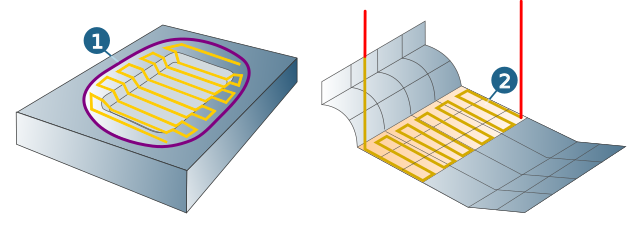
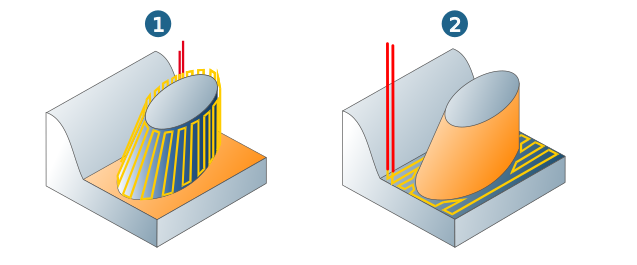
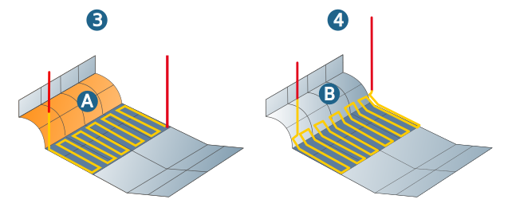

10.5. Boundary
Define the machining area, the edge behavior of the tool at the machining boundaries (tool reference), the plunge point for the machining.
Different methods are available for defining boundaries, depending on the machining cycle. Explanations are provided in the respective machining cycle sections.
Define machining area
Define the machining area either using Boundary curve / Curve selection (1) or Milling surfaces/ Surface selection (2). If no machining area has been defined, the limitations of the component, including an offset are regarded as the machining boundaries.
|  |
Note
To machine stock that has not been pre-formed, always define the stock boundaries as the machining area in order to avoid empty cuts due to an internal offset.
Surfaces that are not visible (1) from the ‘perspective’ of the tool axis (Z axis of the frame system) are excluded from machining.
 |
Stop surfaces
Use stop surfaces to define the area of the CAD model on which no machining takes place. Always use stop surfaces whenever you need to ensure that the tool does not touch the stop surfaces.
Use all other surfaces: All (other) surfaces of the component that are not used for milling are automatically defined as stop surfaces excluded from machining.
|
Manual selection: Manual definition of stop surfaces to be excluded from machining. |

Offset: The offset of the stop surfaces extends the area excluded from machining by the specified value. Valid in X, Y and Z direction.
Additional horizontal offset: Extends the area excluded from machining in X, Y direction.
Milling surfaces and stop surfaces: examples
The following examples illustrate the relationship between milling surfaces and stop surfaces.
Example 1: The Manual selection option for stop surfaces has been enabled and stop surfaces have been selected. The surface of the cog is defined as a milling surface, whereas the bordering surfaces are defined as stop surfaces.
Example 2: The Manual selection option for stop surfaces has been enabled and stop surfaces have been selected. The surface of the cog is defined as a stop surface, whereas the bordering surfaces are defined as milling surfaces. The combination of milling and stop surfaces enables simple yet precise delimiting of the machining area
|  |
Example 3: The Manual selection option for stop surfaces has been enabled and stop surfaces (A) have been selected. Machining ends at the stop surface. The tool does not touch the stop surface.
Example 4: the manual selection option for stop surfaces has been enabled, and no stop surfaces have been selected. The machining does not end at surface 1, because it is not defined as a stop surface. The tool touches surface B.
|  |
Soft bounding
Only available for ball mills. Machining does not stop when the tool makes contact with the bounding surface (1), but when it exceeds the surface by the blending factor (2). This factor is based on the tool radius (standard = 0.05 x tool radius). Permitted values are between 0.02 and 0.2. In this way, full machining of the milling surface (3) is ensured.
Use the Use all other surfaces option to set all surfaces not defined as milling surfaces (3) or stop surfaces as bounding surfaces (1). Select the stop surfaces manually.
Use the Manual selection option to manually select the stop and bounding surfaces.
 |
Note
Define all surfaces that connect to the milling surfaces tangentially or that continue vertically downward from their edge as bounding surfaces.